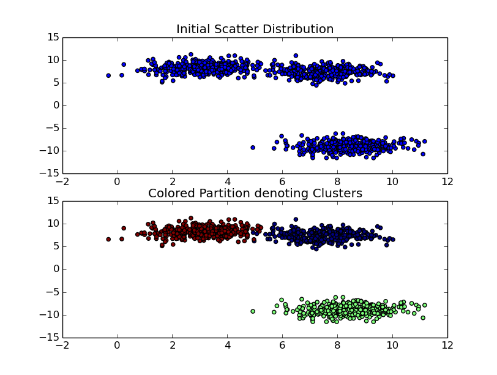
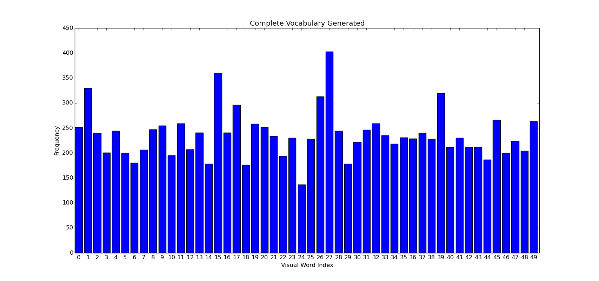
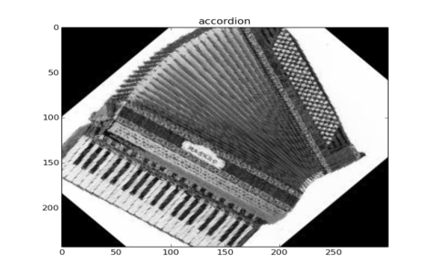
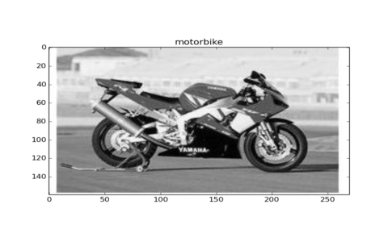
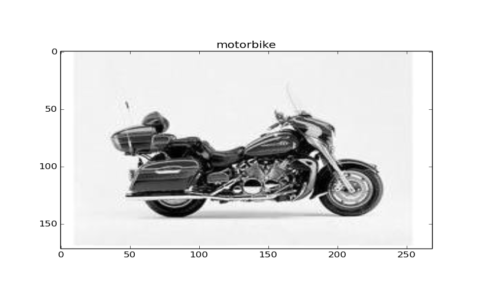
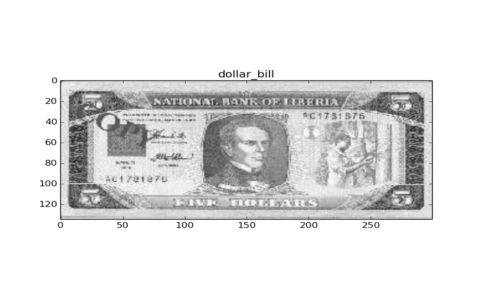
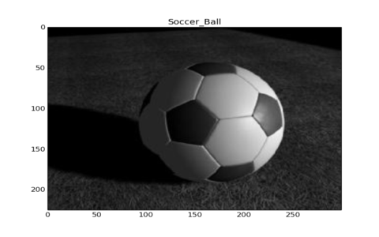

Bag of Visual Words is an extention to the NLP algorithm Bag of Words used for image classification. Other than CNN, it is quite widely used. I sure want to tell that BOVW is one of the finest things I’ve encountered in my vision explorations until now.
So what’s the difference between Object Detection and Objet Recognition .. !! Well, recognition simply involves stating whether an image contains a specific object or no. whereas detection also demands the position of the object inside the image. So say, there is an input image containing a cup, saucer, bottle, etc. The task is to be able to recognize which of the objects are contained in the image.
BOV was developed by CSurka et. al essentially creates a vocabulary that can best describe the image in terms of extrapolable features. It follows 4 simple steps - Determination of Image features of a given label - Construction of visual vocabulary by clustering, followed by frequency analysis - Classification of images based on vocabulary genereated - Obtain most optimum class for query image
To implement this, we shall be using : Opencv (3.x), sklearn (0.17), caltech101 dataset( trimmed version)
Lets first understand what a feature is. One can say that a feauture is any discernable, and a significant point/group of points in an image. What to select as a feature depends on the application such as corner points, edges, blobs, DOG , etc. And to ease out our troubles, David Lowe developed SIFT : Scale Invariant Feature Transform. SIFT is extensively used today. We will be using SIFT as well. Please note, that algorithms such as SIFT, SURF which are patented are not available in the master version of Opencv-Itseez. To be able to use it, either install opencv_contrib or VLFEAT (You may want to check out my previous post on environment settings ).
Lets begin with a few introductory concepts required Bag of words. We shall cover 4 parts (so keep scrolling !)
- Clustering
- Bag of Visual Words Model
- Generating Vocabulary
- Training and testing
Clustering : Lets say there is a bunch of Wrigleys Skittles. And someone is to tell you to group them according to their color. It’s quite simple .. aint it! Simply seperate all red, blue, green, etc in different parts of the room. Here, we differentiated and seperated them on basis of color only.
So moving on to a more complex situation that would give a much profound meaning to clustering. Suppose there is a room full of utilities, be it accesories, clothing, utensils, electronics, etc. Now, if someone is told to seperate out into well formed groups of similar items, one would essentially be performing clustering.
So yes, clustering can be said as the grouping a set of objects in such a way that objects in the same group are much similar, than to those in other groups/sets
Moving on, lets’ decide as to how we perform clustering. The selection of clustering algorithm depends more on what kind of similarity model is to be chosen. There are cases wherein, the plain’ol clustering impression that everyone so simply elucidates may not be the right choice. For example, there exists various models, such as centroid oriented - Kmeans, or Distribution based models - that involve clustering for statistical data; such places require Density based clustering (DBSCAN) , etc.
Beginning with KMeans clustering. Suppose there are X objects, that are to be divided into K clusters. The input can be a set of features, \(X = \{ x_1, x_2, ..., x_n \}\). The goal is basically to minimize the distance between each point in the scatter cloud and the assigned centroids.
where \(\mu\) is mean of points for each \(S_i\)(cluster) and \(S\) denotes set of points partitioned into clusters of \(\{ S_1, S_2, ... S_i \}\)
Hence it can be said that for each cluster centroid, there exists a group of point around it, known as the center.
-
We first define an initial random solution. This initial solution can be called as the cluster centroids. They need to be randomly placed within the bounds of data , and not so callously random.
-
Second comes the Assignment Step. What happens here, is that KMeans iterates over each of the input feature / datapoint and decides which is the closest cluster centroid w.r.t itself. Once the closest centroid is established, it is then alloted to that particular centroid.
-
Next is the Average & Update Step. Once we are able to perform the first, most crude clustering, we shall relocate the cluster centroids. The newly computed cluster centroids can be said to be the aggregate of all members of that particular cluster. Hence the centroid moves more inwards for a tightly alligned distribution and more outwards otherwise.
-
Once the avergaing step is accomplished, and the new clusters are computed, the same process is repeated over and over again. Untill … !!!
-
The ideal condition for stoppage is when there is no change in position of the newly computed cluster centroid with respect to its previous position. This can be further interpreted as that the distance of every datapoint inside its cluster will be minimum w.r.t its mean i.e its centroid. However, there can be a minimum threshold value to stop the clustering process from going on and on.
Okay, below is a snippet showing how to use KMeans clustering algorithm as provided in scikit.

Here’s a sample output for clustering using 3 clusters on a set of 1000 samples
Why are we using Clusterng … Why Kmeans …: KMeans performs clustering. It is one of the widely used algorithms when it comes to unsupervised learning. Bag of visual words uses a training regimen that involves, firstly, to partition similar features that are extrapolated from the training set of images. To make it more easily understandable, think of it this way. Every image has certain discernable features, patterns with which humans decide as to what the object perceived is. When you see a image of … umm. let’s say a motorbike - significant features are being extrapolated. This features together help in deciding whether what is being seen is actually a motorbike. The collection as well as frequency of particular features is what helps in estimating what object does the image contain,
Some Prerequisites :
-
First of all, you need a training set. If you’re using a personal computer, I’d recommend to use a truncated version of any publically available image datasets (if you’re worried about your PC taking up too much time during training) or perhaps train using a minimally bounded set of features. I’d recommend using Caltech101. Also check out Caltech256, CIFAR10 datasets. They’re good !! As in real good.
-
Secondly please set up either LIBSVM , SKLEARN, VLFEAT ( for enhanced vision algos… like sift) Library, or Any python machine learning toolkit that will provide basic SVM , Kmeans functionaliy. You can visit my previous post on setting up environments.
-
Third, please maintain a descent project directory structure. Well documented and well assembled as to where input , output and logs will be stored. This will help a lot for further projects and especially when it comes to making your code modular.
So lets’ proceed.
Bag of Visual Words¶
This is a supervised learning model. There will be a training set and a testing set. You can find my implementation on Github.
-
Split the downloaded dataset into training and testing. You can use the 70-30 ratio or 80-20. But keep in mind, if the training data is not good , there WILL be discrepencies in the output.
-
BOVW is an example of supervised learning. It’s always better to keep a mapping of which images belong to what classification label ( a label can be defined as a key/value for identifying to what class/category does the object belongs).
-
Extract features from the training image sets. One can use opencv_contrib/ vl feat for Feature Extration(SIFT, SURF more popularly). This essentially converts the image into a feature vector.
-
The final step is codebook generation. A codebook can be thought of as a dictionary that registers corresponding mappings between features and their definition in the object. We need to define set of words (essentially the features marked by words) that provides an analogous relation of an object ( being trained) w.r.t. a set of features.
Project Architecture :
- root dir/
|- images/
|- test /
|- obj1/
|- obj2/
|- train /
|- obj1/
|- obj2/
|- helpers.py
|- Bag.py
:~$ python Bag.py --train_set images/train/ --test_set images/test/
\(images\) directory contains testing and training images. Provide the path to test and train images to \(Bag.py\) file.
We shall go through each module, step by step. Bag.py contains the main. We have the methods trainModel and testModel. Heplers.py contains various helper functionalities. It contains Imagehelpers, FileHelper, BOVhelpers. Imagehelpers contains colorscheme conversion, feature detection. FileHelper returns a dictionary of each object-name with a corresponding list of all images. It also returns total image count. (required later)
FileHelper will return the training set. It returns a dictionary with key = object_name and value = list of images and total number of images.
1 2 3 4 5 6 7 8 9 10 11 12 13 14 15 16 17 18 19 20 | |
ImageHelpers’s primary function is to provide with SIFT features present in an image. We require these image features to develop our vocabulary.(I’ll explain what it means in the coming parts .. ).
1 2 3 4 5 6 7 8 9 10 11 | |
I will reiterate the algorithm once again, and now step by step. With the input image list, firstly compute features. You’ll need objects of all helper classes. So please initialize them in your main module. Having detected and computed SIFT features, we need to process a vocabulary.
How to develop visual vocabulary ?¶
“A picture is worth a thousand words … “
Suppose I say, there is an image of a shoe. Humans tend to describe using normal english language words. A person will probably descibe a shoe as a shoe! A bit elaborated version may be , something having laces and small netted structures. Go a bit further, and it’ll seem to have small holes/circles, a few curved lines, a bunch of very striking corner points, a few patches having high contrast. Now you’re speaking in terms of a vision. One can dumb down the idea of descriptors / features in an image as striking/significant portions of the image that help describe it. Every image contains multiple features i.e. if we were to mathematically express an image in terms of features, we would say that an Image is a collection of features , where every feature may have a certain frequency of occurence.
If it is so, how can we differentiate w.r.t features. !!! The answer comes from a much natural origin. Suppose a human was asked to differentiate between a shoe and a lipstick :P . He/she would start describing each of the aforementioned item. Shoe would have small circular pathes, long laces, much curved portions, etc. On the other hand, a lipstick is quite cylindrical and has a top buldge. So i can say ,
__ for a set of given features, there exists a weighted combination of features that describe an image individually __
and that
Every feature present in an image, can be used as means for describing the same image
From the above two statements, we define what a visual word is. Simply any thing that can be used to describe an image , we consider them as a visual word. Thus, our image becomes a combination of visual words (that are essentially features). And to make it more mathematical, we define this structure as a histogram. Essentially, histogram is just a measure of frequency occurence of a particular item, here in our case, we will be describing each image as a histogram of features. How many features out of the total vocabulary are required to make sense of what the computer is looking at .
Linking vocabulary and clustering :¶
Using SIFT, we detect and compute features inside each image. SIFT returns us a \(m \times 128\) dimension array, where m is the number of features extrapolated. Similarly, for multiple images, say 1000 images, we shall obtain
We now have a full stacked up list of what visual words are being used for every image. The next task is to group similar features. Think of it as synonyms .... Similar features can provide an approximate estimate as to what the image is, just as synonyms tend to express upon the gist of a sentence. Therefore when the machine is trained over several images, similar features that are able to describe similar portions of the image are grouped together to develop a vast vocabulary base. Each of these group collectively represent the a word and all groups in totality yields us the complete vocabulary generated from the training data. Hence there is a screaming need for clustering in the said process.
If we were to allot a definition to any of the similar words, we can simply refer them by their cluster number.
A more illustrative visualization of the histogram can be observed in the adjacent figure.

The above image shows how a collective vocabulary will look like. Encomprising of the total number of each type of feature/word present in the training set in totality.
Here’s some implementation snippet as to how one would implement this
As seen, the input is n_images i.e. the total number of images and descriptor_list, that contains the feature descriptor array ( one discussed above, the full stacked up list of features). Our histogram is therefore of the size \(n\_images \times n\_clusters\) thereby defining each image in terms of generated vocabulary. During the definition phase, we need to locate the cluster that contains the features i.e the cluster number whose cluster centroid is nearest to the location of the current feature.
This completes the most important part of the vocabulary generation. Now time to train the machine.
Training the machine to understand the images using SVM ¶
Our \(mega\_histrogram\) is basically an array of size \(n\_samples, n\_significantFeatures\). Meaning, the number of rows, that are defined as the \(n\_imagses\) in the above snippet, are nothing but samples we need to train. Each row contains a distribution/combination of visual words used to describe the image. All we need is a multiclass classifier to distinguish between similar images and to define classes for the same.
for classification purposes, I’d recommend to use sklearn. Its by far the most easily adaptable API i’ve used. And goes very well with numpy datastructures.
Just so you know, Coding up an SVM on your own is a herculean task, hence we follow a 1-2-3 methodology as projected by SKLEARN.
clf = SVC() # make classifier object
clf.fit(train_data, train_labels) # train the model
[classes] = clf.predict(test_data) #returns a list of prediction for each test_data
That’s it !! Once trained, the model is ready for testing !!
Implementation Details¶
Please maintain the aforementioned project dir structure and follow naming conventions. You may want to read the repositories readme for further details. Here’s what predictions I obtained on testing and training the model against a trimmed version of Caltech101 dataset.
There are a few snaps of outputs when the model was tested on the limited version of the dataset .
    
Checking for Accuracy¶
Accuracy measure is one of the most important steps in ML algorithms .A Confusion matrix is basically how many test cases were correctly classified. Hence, a confusion matrix is used to determine the accuracy of classification. On having tried it on the limited dataset, below is the CF.
So now you know how to write your own Image Classifiers and Recognizers… !! Hurrayy !! There are tremendous application when it comes to intelligence and computer vision. Especially in this field. If you wanna check for accuracy measures in classification, be sure to implement a Confusion Matrix .Meanwhile, use the Bag of Visual Words and create some cool stuff